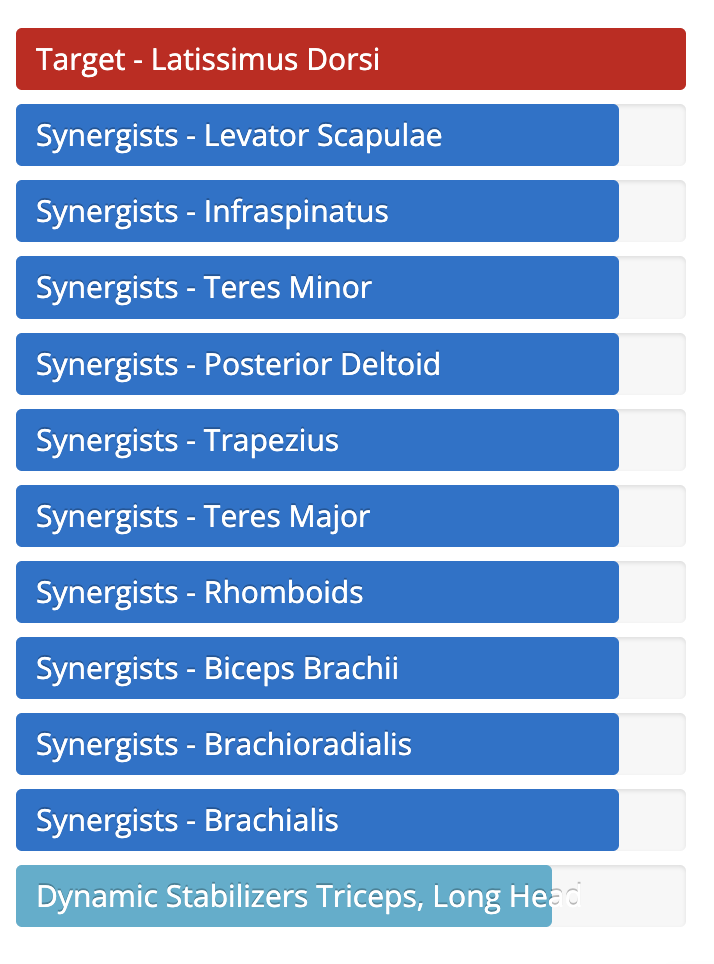
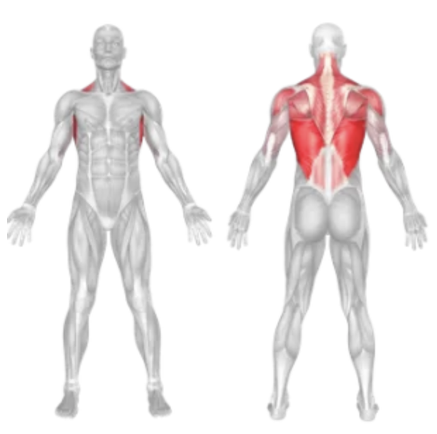

Setup
- Sit down at a lat pulldown machine and adjust the knee pad to secure your legs.
- Select the appropriate weight on the stack.
- Grip the bar with a wide grip, palms facing away from you (overhand grip), hands slightly wider than shoulder-width apart.
- Pull the bar down slightly to engage your lats and sit with a straight back and chest up.
Execution
- Pull Down Exhale and pull the bar down toward your upper chest in a smooth, controlled motion. Focus on squeezing your shoulder blades together.
- Pause and Squeeze Hold for a second at the bottom of the movement to contract your lats.
- Return Slowly Inhale and slowly let the bar return to the starting position with control, allowing your lats to stretch.
- Repeat for the desired number of repetitions.
Tips for Effectiveness
- Focus on Lat Engagement Visualize pulling through your elbows to better activate your back muscles.
- Keep a Neutral Spine Avoid leaning too far back or swinging your torso.
- Controlled Reps Don’t use momentum; keep the movement slow and controlled.
- Full Range of Motion Allow a full stretch at the top and a full contraction at the bottom.
Benefits of Lat Pull Down
- Strengthens the Back Primarily targets the latissimus dorsi for a wider, stronger back.
- Improves Posture Reinforces proper shoulder alignment and upper back strength.
- Assists Pull-Up Progression Builds the strength needed to perform pull-ups and chin-ups.
- Joint-Friendly Safer for beginners compared to free-weight pull-ups.
Muscles Worked in the Lat Pull Down

